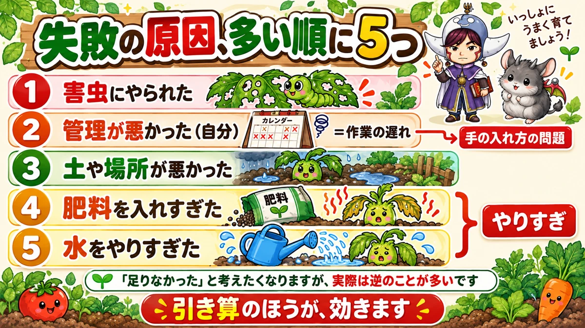
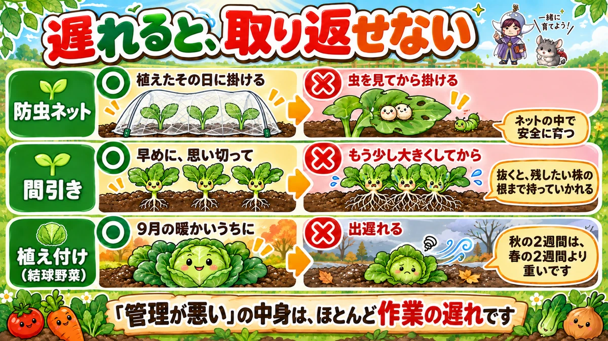
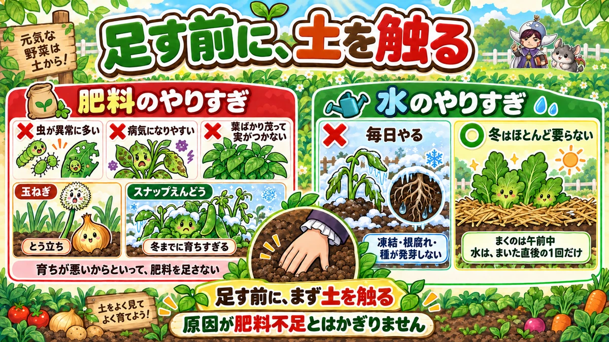

畑の失敗は、足りないのではなく、やりすぎです🌱
🌱「一生懸命やっているのに、うまくいかない」
🌱「肥料も水もあげているのに、育ちが悪い」
🌱「毎年、同じところでつまずいている気がする」
どうも、8150（えいこう）です🌱 家庭菜園歴8年、理科の教員免許を持っていて、有機・無農薬で野菜を育てています。
今日は、ひとつの区切りとして★失敗の話をまとめます。
私が8年でやらかしてきたことと、★種苗会社などが公表している「失敗した原因」のアンケート結果を並べてみました。
ほぼ同じでした😅
先に、この記事でいちばん言いたいことを言っておきますね。
★失敗の多くは、足りないのではなく、やりすぎです。
肥料も、水も、手のかけ方も。★引き算のほうが効きます🌱
失敗の原因、上から順に

多い順に、5つ
公表されているアンケートを見ると、だいたいこの順です。
- ★害虫にやられた
- ★管理が悪かった（つまり自分）
- ★土や場所が悪かった
- ★肥料を入れすぎた
- ★水をやりすぎた
4位と5位を、見てください
ここに気づいてほしいんです。
★4位と5位が「やりすぎ」です。
そして★2位の「管理」の中身も、ほとんどが手の入れ方の問題です。
「何かが足りなかったのでは」と考えたくなりますよね。★でも実際は逆のことが多いんです。
❶ 虫は、植えた直後で決まります
出てから掛けても、遅い
いちばん多い失敗が、虫です。特に葉物は、やられると丸ごと終わります。
対策そのものは単純です。★防虫ネットを掛ける。
問題は★タイミングです。
★掛けるのは、植えた「直後」
よくあるのが、これです。
植える → 数日たつ → 虫が見えた → あわててネットを掛ける。
★もう遅いんですね。
その数日のあいだに、★葉の裏に卵を産みつけられています。ネットの中で、安全に育つことになります。
★苗を植えたその日に掛けてください。まだ虫が1匹も見えないうちに、です。
肥料が、虫を呼んでいます
もうひとつ、意外な話をします。
★肥料をやりすぎると、虫が来ます。
特に窒素分が多いと、葉がやわらかく茂って、★虫にとってごちそうになります。
葉物はなかなか大きくならないので、つい追肥したくなりますよね。★そこで虫を呼んでいることがあります。
見る量だけ、育てる
そして最後は、これに尽きます。
★毎日見て、いたら取る。
農家さんは量が多くて見きれません。★でも家庭菜園なら、見られます。
だから★「自分が毎日見られる量」に抑えるのが、いちばんの防除です。増やしすぎないでください。
❷ 「管理が悪い」の中身は、遅れです

遅れると効くのは、この3つ
2位の「管理が悪かった」。★具体的には、作業の遅れです。
- ★植え付けの遅れ
- ★間引きの遅れ
- ★追肥の遅れ
植え付けの遅れ
白菜やキャベツのように★玉を作る野菜は、9月の暖かいうちに体を大きくします。
そこで出遅れると、★寒くなってから頑張っても間に合いません。
小ぶりのまま、あるいは★玉にならないまま終わります。
★秋の2週間は、春の2週間より重いです。
★間引きの遅れが、いちばん怖い
これは私も何度もやりました。
「もう少し大きくしてから」と思っているうちに、★根が絡みます。
そうなると、抜くときに★残したい株の根まで一緒に持っていかれます。
間引きは★かわいそうだから遅らせる、が裏目に出る作業です。
★早めに、思い切って。混んでいるほうが被害が大きいです。
追肥の遅れ
実がなる野菜は、途中で肥料が切れます。
★きゅうりやなすは、実をつけながら肥料を食べ続けます。
「元気がなくなってから」では★遅いので、収穫が始まったら定期的に、を意識してください。
❸ 土と場所は、あとから直せません
時間のかかる野菜ほど、いい場所へ
日当たりと水はけ。★これは植えたあとでは変えられません。
だから★時間のかかる野菜を、いい場所に置いてください。
- ★白菜・キャベツ・ブロッコリー … 日当たりのいい場所
- ★大根・にんじん … 水はけがよく、深く耕せる場所
悪い場所には、小さいものを
日当たりの悪い場所を捨てる必要はありません。
★ベビーリーフや小松菜など、小さいうちに穫るものを植えてください。
★短期間で終わるものなら、条件が悪くても収穫までたどりつけます。
❹❺ やりすぎの、2つ

肥料は、あとから効いてきます
肥料の入れすぎがやっかいなのは、★すぐに失敗と分からないことです。
しばらくたってから、こう出ます。
- ★虫が異常に多い
- ★病気になりやすい
- ★育ち方がおかしい（茎ばかり太い、葉ばかり茂る）
分かりやすい2つの例
はっきり出る野菜があります。
- ★玉ねぎ … 肥料が多いと、とう立ちします（花の芽が立って、玉が締まらない）
- ★スナップえんどう … 冬までに育ちすぎて、霜にやられます
どちらも★「よかれと思って足した」結果です。
育ちが悪い、で足さない
覚えておいてほしいのは、これです。
★育ちが悪いからといって、肥料を足さない。
原因が肥料不足とはかぎりません。★水、日当たり、根の張り、温度。どれでも育ちは止まります。
★足すのは最後にしてください。
水は、冬はほぼ要りません
5位が水のやりすぎです。★特に冬です。
夏と同じ感覚で毎日やると、こうなります。
- ★水が凍って、根を傷める
- ★根腐れを起こす
- ★まいた種が凍って、芽が出ない
★畑にマルチをしていれば、冬の水やりはほとんど必要ありません。
冬の種まきは、最初の1回だけ
これは知らないと必ずやります。
★冬に種をまいたら、水は最初の1回だけです。
そのあと毎日やると、★夜に凍って発芽しません。
★まくのは午前中にしてください。午後にまくと、夜の冷え込みに直撃します。
私の、8年ぶんの失敗
肥料を足して、なすを虫だらけにした
2年目のことです。なすの育ちが悪くて、★2週間で3回追肥しました。
結果、★葉ばかり茂って実がつかず、そのうち虫だらけになりました。
原因は肥料不足ではなく、★水不足でした。足す前に、土を触ればよかったんです。
間引きを先延ばしして、全部小さくした
3年目、大根の間引きを2週間先延ばししました。
★もったいなかったんです。
結果、★1本も太らず、全部が細いまま終わりました。20本のうち、使えたのは3本です。
ネットを1週間、後回しにした
4年目の秋、ブロッコリーを植えて、★ネットは週末に掛けようと思いました。
次の週末には、★葉が穴だらけでした。
★苗を運ぶついでに、ネットも持っていけばよかっただけの話です。
全部、やりすぎか、遅れです
並べてみて気づきました。
★私の失敗に「足りない」はほとんどありません。
やりすぎたか、遅れたか。★このどちらかです☺️
まとめ
ここまで読んでくださって、ありがとうございます！
- ★失敗原因の上位は、虫／管理／土と場所／肥料の入れすぎ／水のやりすぎ
- ★4位と5位は「やりすぎ」
- ★防虫ネットは、苗を植えたその日に掛ける
- ★あとから掛けても、もう卵がある
- ★肥料をやりすぎると、葉がやわらかくなって虫を呼ぶ
- ★自分が毎日見られる量だけ育てる
- ★「管理が悪い」の中身は、作業の遅れ
- ★結球野菜は9月の暖かいうちに大きくする
- ★間引きが遅れると、根が絡んで残す株まで傷む
- ★実のなる野菜は、収穫が始まったら定期的に追肥
- ★日当たりと水はけは、あとから直せない
- ★時間のかかる野菜を、いい場所に置く
- ★条件の悪い場所には、小さく穫れるものを
- ★肥料の入れすぎは、あとから虫・病気・生育障害として出る
- ★玉ねぎはとう立ち、スナップえんどうは育ちすぎて霜にやられる
- ★育ちが悪いからといって、肥料を足さない
- ★冬の水やりは、ほとんど要らない
- ★冬の種まきは、まいた直後の1回だけ。午前中にまく
全部やろうとしなくて大丈夫です。まずは★次に手を出したくなったとき、いったん土を触ってみてください。それだけで、やりすぎがひとつ減ります🌱
ここまでで、ひとまとまりの区切りです。次回からは、また野菜に戻ります。まずはスイカ。★つるを切る場所と、叩いて分かる収穫日の話をします🍉
防虫ネット
初心者の失敗でいちばん多いのが「虫にやられた」です。これ1つで大半は防げます。
![[商品価格に関しましては、リンクが作成された時点と現時点で情報が変更されている場合がございます。]](https://hbb.afl.rakuten.co.jp/hgb/56bc205d.0066fedc.56bc205e.af56d163/?me_id=1260467&item_id=10000299&pc=https%3A%2F%2Fthumbnail.image.rakuten.co.jp%2F%400_mall%2Fmarsol-morishita%2Fcabinet%2Fshouhinn%2Fbouchuu%2Fimgrc0090950099.jpg%3F_ex%3D240x240&s=240x240&t=picttext "[商品価格に関しましては、リンクが作成された時点と現時点で情報が変更されている場合がございます。]")

不織布
まいた種が出ない、という失敗の多くは乾燥です。かけておくだけで発芽率が変わります。
![[商品価格に関しましては、リンクが作成された時点と現時点で情報が変更されている場合がございます。]](https://hbb.afl.rakuten.co.jp/hgb/56bc237a.e97551b1.56bc237b.2513ed10/?me_id=1310260&item_id=10000879&pc=https%3A%2F%2Fthumbnail.image.rakuten.co.jp%2F%400_mall%2Fdiokasei%2Fcabinet%2F007fusyokufu%2F12g%2Fimgrc0092049705.jpg%3F_ex%3D240x240&s=240x240&t=picttext "[商品価格に関しましては、リンクが作成された時点と現時点で情報が変更されている場合がございます。]")
苦土石灰
土が酸性に寄っていると、どれだけ丁寧にやっても育ちません。最初に一度整えておきます。
![[商品価格に関しましては、リンクが作成された時点と現時点で情報が変更されている場合がございます。]](https://hbb.afl.rakuten.co.jp/hgb/55e75fe5.20db4cd1.55e75fe7.d1ec32cc/?me_id=1194164&item_id=10000709&pc=https%3A%2F%2Fthumbnail.image.rakuten.co.jp%2F%400_mall%2Fgardening%2Fcabinet%2Fikou_20091001_001%2Fimg1043676078.jpg%3F_ex%3D240x240&s=240x240&t=picttext "[商品価格に関しましては、リンクが作成された時点と現時点で情報が変更されている場合がございます。]")
あわせて読みたい